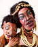
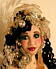

Santa Fe 2000 Doll Show

 |
 |
|
I would greatly appreciate any related information that you might be able to provide for these pictures. Please EMAIL me if you can add to (or correct) the information that I have.
Go to Page 2
Go to Page 3
Go to Page 4
Go to Page 5
Go to Page 6
Go to Page 7